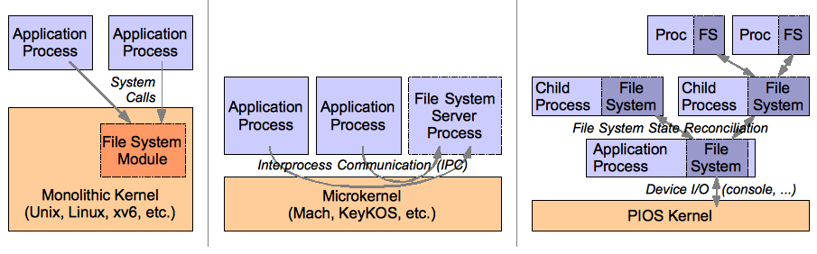
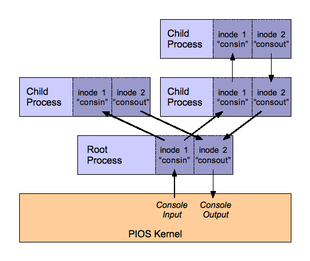

Handed out Friday, March 19, 2010
Due Thursday, April 1, 2010 (no joke!)
In this lab, you will add support for interactive console input/output and a file system abstraction to PIOS, enabling the implementation of basic Unix-style shells and other command-line programs. Unlike conventionl Unix-like operating systems, however, PIOS's file system will be implemented mostly in user mode, as part of the minimal C library that gets linked into PIOS applications. Each PIOS process will effectively contain its own file system, whose state resides in the process's virtual address space rather than on disk, and different PIOS processes will use file synchronization techniques to propagate file system updates among processes, much as if each process were a separate node in a small distributed system. Contrary to one of the basic purposes of file systems in a conventional operating system, PIOS's file system for now will not provide persistence — the ability for state to survive crashes or reboots — although we will add persistence of sorts to PIOS in Lab 5.
This lab contains the following parts:
In this lab you will build on the kernel from lab 3. Use the same procedure as in the previous lab to create a lab4 branch in your Git repository, fetch our skeleton source code for lab 3 from the master Git repository, and merge your lab3 solutions into it as your starting point for lab 4:
$ cd lab $ git commit -am 'my solution to lab3' $ git pull $ git checkout -b lab3 origin/lab4 $ git merge lab3
Lab 4 contains a number of new source files. The following are the most important ones, which contain the skeletons for the Unix-style file system and process management facilities you will be working on in this lab; you should first look through them carefully:
inc/file.h Definitions describing file system and process management metadata. kern/file.{c,h} Kernel module to set up the root process's file system and synchronize it to provide general-purpose I/O. lib/file.c Core functions for user-level file system management. lib/fork.c User-level implementation of Unix-style fork/wait and file system reconciliation. lib/exec.c User-level implementation of Unix-style program loading and execution.
The other new files mostly consist of additional C library infrastructure and some user-level programs to run on your kernel; you should browse through them briefly to get a sense for what's there and how they relate to each other:
C library header files:
| inc/stdlib.h | C standard library functions. |
| inc/unistd.h | Unix API functions. |
| inc/dirent.h | Unix directory scanning functions. |
| inc/stat.h | Unix file status definitions and functions. |
| inc/errno.h | C/Unix error number definitions. |
| inc/args.h | Simple command-line argument parsing macros. |
C library support code:
| lib/dir.c | Directory scanning. |
| lib/stdio.c | C standard file I/O functions. |
| lib/fprintf.c | Formatted file I/O functions. |
| lib/stdlib.c | C standard library functions. |
| lib/unistd.c | Unix API file I/O functions. |
| lib/readline.c | Interactive console input line reading and editing. |
User programs:
| user/testfs.c | File system testing code for lab 4. |
| user/sh.c | A simple interactive command-line shell. |
| user/echo.c | Program to echo the command line to standard output. |
| user/cat.c | Program to copy files to standard output. |
| user/ls.c | Program to list a directory. |
| user/wc.c | Program to count the bytes, words, and lines in a file. |
In conventional operating systems, the file system is a primary kernel storage abstraction that is globally shared by all processes, which programs can use both to store persistent state across crashes or reboots and as a channel for interprocess communication (i.e., one process writes a file, then another process reads it). PIOS takes a radically different approach: the PIOS kernel provides no file-related system calls, and the "file system" as seen by PIOS applications is really just some state in a portion of a given process's virtual address space, together with some C library functions that know how to access and manipulate that state so as to make it look roughly like a Unix-style file system API. PIOS adopts the philosophy, a file system is whatever looks to applications like a file system: i.e., what matters directly to most applications is that a conventional-looking file API is available providing functions like open, close, read, and write, and not how exactly that API is implemented.
|  |
| File system architecture in conventional monolothic systems, conventional microkernels, and PIOS's "distributed system in one machine." |
To provide some background perspective, many microkernel-based operating systems have made the design choice of implementing the file system in user space rather than in the kernel as it is in Unix: e.g., Mach, KeyKOS, etc. In such microkernel designs, the file system still generally acts as a globally shared service, usually implemented by a special process or group of processes and accessed by other, "normal" application processes via interprocess communication (IPC).
PIOS takes this decentralization of the classic file system abstraction still one step further, such that processes no longer share access to a global file system at all. Instead, each PIOS process contains its own local copy of all file system state, and changes that one process makes to its local copy of the file system are not seen at all by other processes until two processes explicitly synchronize with each other and propagate or reconcile their file system updates. In effect, each PIOS process behaves like its own "node" in a small "distributed system", with all of these process/nodes crammed into one physical machine. Each process/node maintains its own file system replica for local use by the process itself, and propagates its changes from one replica to another only when processes synchronize via events such as fork and wait. See the figure for an illustration contrasting the Unix/xv6 approach, the conventional microkernel approach, and the PIOS "distributed system in a system" approach.
Exercise 1. Study inc/vm.h and inc/file.h to understand how file system state is structured within each process's address space. In particular, make sure you understand exactly what the 'files' global variable points to (this variable never changes, although what it points to does), where it is located in each process's virtual address space, and where the actual content of a given file (as opposed to the file's inode metadata such as size mode) resides in a process's address space.
Since we will want to include several files in the initial file system, and this list of files will grow in subsequent labs, we need a more automated way to link copies of these files into the kernel and implement the kernel logic to populate the initial file system. We have provided a bit of magic in kern/Makefrag to create an automatically-generated header file obj/kern/initfiles.h, which just contains a series of statements of the form INITFILE(filename), one for each file that the root process's initial file system should contain. The kernel's Makefrag links these files into the kernel automatically, and the top of kern/file.c contains some ugly but useful preprocessor magic that uses the automatically-generated obj/kern/initfiles.h to build a table listing the names of each of these initial files, and the start and end addresses at which they are linked into the kernel.
Exercise 2. Carefully examine, then complete the file_initroot() function in kern/file.c. This function sets up the root file system image for the root process. We have provided most of its implementation for you, including code to set up several "special" files and file descriptors, such as the console input/output files described later and the inode representing the root directory. You'll need to write only one small piece of code, to populate the root process's initial file system from the initfiles table so that the root process has some regular files to start with.
To check the contents of your initial file system, modify your init() function in kern/init.c to use the preprocessor symbol ROOTEXE_START, instead of the hard-coded symbol _binary_obj_user_testvm_start as in the last lab, to find the ELF executable to load and run in the root process. You'll notice that at the top of kern/init.c we've made ROOTEXE_START default to running a new program, user/testfs, in the root process. Once you've written the code to populate the initial file system, user/testfs should dump a list of the files in the initial file system, and then report 'initfilecheck passed'.
Exercise 3. Implement the functions fileino_read() and fileino_write() in lib/file.c, which respectively read from and write to files in the per-process file system. Notice that these are in fact just "helper functions" called by filedesc_read() and filedesc_write() further down in the same source file, and those functions are called in turn by the "real" file system API functions, read() and write() in lib/unistd.c, and fread() and fwrite() in lib/stdio.c. Be sure you understand the relationship between all these functions and exactly what the "top-level" functions are supposed to do (type man read, etc., under Linux for a detailed description), before you implement them.
Hint: When implementing filedesc_write(), note that you're responsible for managing the permissions of the virtual address region containing the file's content. Each file's 4MB data area starts with no permissions on any page, so you'll have to adjust these page permissions in order to read and write file data. While you can manage page permissions any way that works, one approach amenable to catching accidental bugs might be to maintain the invariant that only pages containing actual file data ever have non-zero permissions; the implementation of fileino_truncate() we provided follows this invariant.
Once you have the reading and writing implemented and working, you should be able to pass the readwritecheck in user/testfs.
Exercise 4. Implement the function filedesc_seek() in lib/file.c. This function is called by both lseek() in lib/unistd.c and fseek() in lib/stdio.c. Again, refer to the Linux or other Unix man pages for precise details on how these API functions should work.
Once you have seek implemented, you should be able to pass the seekcheck in user/testfs.
Exercise 5. Implement the function readdir() in lib/dir.c, which scans a directory and returns the entries it contains, one at a time. You'll need to use the ofs field of the filedesc structure (aka DIR) to keep track of the current "position" in the directory, although in this case it does not represent a byte offset as it would in a file descriptor for a regular file.
Once you have directory scanning implemented, you should be able to pass the readdircheck in user/testfs.
For general-purpose I/O, therefore, PIOS processes will use the user-level read/write API you started filling out above. But since regular files in PIOS's file system are just part of the process's address space, how can they provide any capability for communication with entities outside the process's address space, such as the console device drivers in the PIOS kernel? The answer is that they don't provide any external I/O capability at all while the process is just running on its own normally — but when a process forks or synchronizes with a child or with its parent process, at those specific synchronization points we will arrange for I/O to propagate across these parent/child relationships, essentially by copying file data from the file system in one process to the file system in its immediate parent or child process.
|  |
| File system architecture in Propagation of console input/output among PIOS processes |
To support console I/O, we've reserved two file inodes, FILEINO_CONSIN and FILEINO_CONSOUT for "special" console input and output files to provide external I/O capability. All of the processes in the PIOS system will "agree upon" the special meanings of these two special files. We have given these special files the names 'consin' and 'consout' in the file system's root directory: you should see them in the root directory listings you got above while implementing directory scanning. Like regular files, the content of these files will reside in the 4MB address region reserved for that file's inode slot in a given process. The consin file in a given process will accumulate all the input that process or any of its children have ever received from the console, and the consout file in a process will accumulate all the output that process and its children have written to the console. In particular, all console input for the whole system is first delivered by the PIOS kernel to the root process's special consin file, and the root process may either "consume" that console input itself or deliver some or all of it in turn to the consin files of its child processes. Similarly, any process's console output first collects in the process's own consout file; then when the process returns to or synchronizes with its parent, the parent copies any new console output from the child into its own consout file, and console output propagates in this way toward the root process and eventually to the external world via the PIOS kernel. The figure to the right illustrates this propagation of I/O in among the processes in a PIOS system.
In this part of the lab, we will for now be concerned only with console I/O interaction between the PIOS kernel and the root process. We will take care of console I/O propagation between processes later in part 4 of the lab.
Up to this point, processes have generally returned to their parent process (or to the PIOS kernel in the case of the root process) when they were "done", for better or worse — i.e., when they completed their assigned task and wish to terminate, or when they encounter a fatal exception and are "forced" by the PIOS kernel to return to their parent. There is no reason in PIOS why such a "return" necessarily has to be fatal to the child, however.
We will now change this convention, so that a process may "return" to its parent any time it wishes to perform I/O or interact with its parent for any reason. Normally the expectation will be that on such a return, the parent process synchronizes and propagates any outstanding I/O between itself and the child, then restarts execution in the child from where it left off. In the special case where the child actually wants to exit permanently, it sets the exited flag in its filestate structure and sets the status field in the same structure to the process's Unix-style exit status: see our (fairly trivial) implementation of exit() in lib/stdlib.c.
Exercise 6. Study the file_io() function in kern/file.c and make sure you understand how it works. Then change your implementation of proc_ret() in kern/proc.c to call file_io() instead of panicking, whenever the root process "returns" explicitly via the RET system call. (You probably still want a panic if the root process returns due to a trap, however.)
Once you do this, user/testfs should get through the consoutcheck() function, printing 'consoutcheck done' at the end — although you won't yet see the console output this function is trying to print via the file I/O API.
Whenever the root process returns to the PIOS kernel, the kernel's file_io() function calls cons_io() in kern/console.c to see if any console I/O needs to be propagated between the root process's consin and consout files and the "real" console hardware (the screen and keyboard). If so, cons_io() handles this I/O and returns nonzero indicating some I/O has been performed, which indicates that file_io() should resume execution of the root process immediately since the root process may have returned purely to perform this I/O. If cons_io() can find no outstanding "work" to do, it returns 0.
Exercise 7. Implement the code in cons_io() required to detect if the root process has appended any new data to its consout file since it last synchronized, and output that data to the console via cons_putc(), using proper spinlock synchronization in the kernel to ensure that the root process's console writes are atomic and will not mingle with concurrent debugging output from other processors.
Hint: Remember the root process's consout file only grows, accumulating all data that has ever been sent to the console, and doesn't shrink when console output is delivered; the kernel just checks for new data appended to the consout file each time the root process returns. Since there is currently no mechanism for "garbage collecting" old console output, the root process can produce at most 4MB of console output — the size of the consout file's data area — before the system will need to be rebooted. This is obviously an unfortunate limitation that would have to be rectified in a production OS.
Once this exercise is done, consoutcheck() should not only complete but its output should be correct: i.e., you should see three lines of console output between the 'should NOT have appeared yet' and 'SHOULD have appeared now' lines, followed by the string '123456789' on the next line.
Exercise 8. Add trap entrypoints for the IRQ_SERIAL and IRQ_KBD hardware interrupts, just like you did for IRQ_TIMER in lab 2. Modify your trap() function to handle these interrupts: it should EOI the local APIC and call cons_intr() whenever it receives a keyboard or serial interrupt. Make sure cons_intr() uses your console spinlock correctly to serialize access to the console input buffer. Finally, uncomment the cons_intenable() call in kern/init.c to allow the serial port and keyboard hardware to start producing interrupts.
There are many solutions to this issue. One is to design the kernel so that most kernel code is interruptible, like xv6 is designed. Another approach is to keep the kernel non-interruptible, but create a set of dedicated "idle processes," one for each physical CPU, whose purpose is solely to spin in user mode (with interrupts enabled) whenever a given CPU has nothing better to do. The JOS kernel takes this approach. PIOS adopts a somewhat ugly but simple middleground approach: we retain the convention that interrupts must remain disabled any time the processor is executing in kernel mode, except in one specific place: namely the idle loop.
Exercise 9. Modify proc_sched() to enable interrupts while within the idle loop, and then disable them again before leaving the idle loop. Then modify trap() as necessary to account for the new, slightly modified convention that device interrupts can come in either from user mode or from the idle looop in the kernel.
Hint: Think carefully about what existing code may be affected: for example, what should you do (and NOT do) if a timer interrupt comes in while in the kernel's idle loop? Also, make sure you're not enabling interrupts too early or leaving them enabled too long in proc_sched(): what would happen if interrupts are enabled while proc_sched() is holding a spinlock, for example?
Once you have completed this exercise, verify that you are indeed getting console interrupts by adding a cprintf() to cons_intr(). You should be able to see characters appearing in the input buffer whenever you press a key in QEMU's display window or in the terminal window from which you ran QEMU. Be careful about where you put the cprintf(), though, to avoid recursion on the console's lock.
Exercise 10. Add console input support to cons_io(), and make cons_intr() call the function file_wakeroot() we have provided to awaken the root process from an I/O-related slumber.
Exercise 11. Modify fileino_read() to check for the S_IFPART flag whenever the caller tries to read past the end of the file, and if it's a partial file such as consin, just return to the parent via sys_ret() and then try reading again until the required data is available.
You should now be able to enter characters interactively into the readline() input loop called from consincheck() in user/testfs.
The implementation of fork() we have provided is complete, and does pretty much the same thing as the fork() function in user/testvm from Lab 3, except with a bit of bookkeeping logic to search for and allocate a process ID for the new child process. Unlike Unix, where process IDs are global, process IDs in PIOS are local to a given process, and correspond directly to the child process numbers from 0-255 supported by the PIOS kernel's API. The Unix-compatible fork() function arranges never to use child 0, since process ID zero is an invalid process ID in Unix (although it's a reasonable child process number as far as the PIOS kernel is concerned). Our implementation of fork() also sets up some state that will be used later in reconciliation during part 4 of this lab.
Since you already went through the torture of implementing the ELF loader the kernel uses to load the root process, we won't subject you to the further torture of writing the ELF loader that one process uses to exec() another. But since the kernel doesn't pass any command-line arguments to the root process, you missed out on that important part of program loading, and we'll catch up on that now in this context.
First study the functions in lib/exec.c, as well as the new assembly language exec_start() function in lib/entry.S, until you understand how the execution process works. According to the normal semantics of a Unix-like exec, the executed process should replace the process currently executing. But unlike Unix, which implements exec in the kernel as a system call, under PIOS we're trying to implement exec completely in user space, within the C library of the process to be replaced. The key technical challenge is loading the new process and getting it all set up and ready to go, without destroying the old process (in which we're still executing) until the new process is entirely ready and we're sure we can complete the transition.
Our user-level exec implementation solves this challenge by setting up the new process's address space in a child process (child 0 specifically), and then calling the assembly language function exec_start() in lib/entry.S, which uses the GET system call to replace the current process's address entire space with that of the child, and then start the new executable's main() function running on a "fresh" stack for the new program. Study exec_start(), and make sure you understand why this transition will only work reliably if both the new and old programs have exactly the same lib/entry.S code with exactly the same size and linked at exactly the same location in both programs.
To set up the new program's address space in child 0, we'll need to set up the appropriate data in our own address space and then use the PUT system call to copy it into child 0. Our exec_readelf() function does this for the ELF executable itself, loading the executable into a 4MB "scratch" address region from VM_SCRATCHLO to VM_SCRATCHLO+PTSIZE and then copying that region into the child's address space.
Setting up the new program's stack and copying the command-line arguments to it follows the same pattern. Since the new program's stack will reside at virtual addresses that are probably the same as those currently occupied by our stack in the current program, and our stack is still very much in use, we have to set up the new stack at another virtual address in our address space and then copy it to the correct location in the address space of child 0. The code we've provided again uses the area from VM_SCRATCHLO to VM_SCRATCHLO+PTSIZE for this purpose, setting up a 4MB stack to reside from VM_STACKHI-PTSIZE to VM_STACKHI in the new program's address space.
Exercise 12. Modify exec_copyargs() in lib/exec.c to copy the argv array, and the strings it points to, onto the new stack to be used by the executed program. Be very careful with your pointer arithmetic: you'll need to create a logical copy of the argv array, which is an array of pointers (to strings) in the current program, into an array of programs that the new program will be able to follow within its own, new address space. This means you'll have to compute the values of all pointers you write into the new program's stack so that they'll be valid in the stack's final location from VM_STACKHI-PTSIZE to VM_STACKHI, rather than at its temporary location from VM_SCRATCHLO to VM_SCRATCHLO+PTSIZE.
The execcheck() function in user/testfs should now be able to fork a child process and have that child process execute the simple echo program, which simply echoes its command-line arguments to the console. The -c parameter that execcheck() passes to echo instructs echo to use the "debugging console" output function cnprintf() instead of the general-purpose printf() function, which will not be fully functional until part 4 of this lab.
The problem maintaining consistency among multiple replicas of a file system or other state repository is a well-studied topic in distributed systems: see, for example, Parker et al., Detection of Mutual Inconsistency in Distributed Systems. Since each PIOS process maintains its own copy or "replica" of a Unix-like file system within the process's own virtual address space, this collection of PIOS processes is in some ways more similar to a distributed file system replicated across several machines than to the standard, single-machine file systems we find in Linux or xv6. In particular, for synchronizing and propagating file system changes among processes, PIOS will use a simplified analog of the version vector technique presented in the above paper, so the first thing you should do is read and familiarize yourself with this paper if you haven't already.
Suppose for example that process A creates two files, foo and bar, then forks a child process B, which inherits copies of both foo and bar. Now suppose process A modifies foo (but leaves bar untouched), while process B independently modifies bar (while leaving foo untouched). Finally, process B terminates, and A synchronizes with B via waitpid(). Besides just collecting B's exit status, A also needs to obtain whatever changes B made to its copy of the file system: for example, B might be a compiler and bar may be an ELF executable it produced. But at the time of the waitpid(), A and B each have files named foo and bar, A's foo is different from B's foo, and A's bar is different from B's bar. A needs to end up with only one copy each of foo and bar; but how does A know which is the right one. The standard answer is to track file versions.
As part of the fileino metadata for each file, we maintain a version number in the fileino.ver member. A file's version number starts at zero when the file is first created, and then incremented by 1 each time the file is modified in some way, such as by writing to the file. Whenever some process A forks a child B, the child copies the file's version number at the time of fork into its reference version number field, fileino.rver. The parent and child then continue running normally, incrementing the inode's version number field if and when they modify the file. Later, when the time comes to reconcile A's and B's file systems (because B terminates, wishes to perform I/O, etc.), A checks both the parent's and child's "latest" inode version numbers against the child's reference version number to see what happened to the file, if anything, since the last reconciliation. There are essentially four cases:
Why do we store the reference version number in the child and not the parent? Because the parent can synchronize with many children, whereas the child can synchronize with only one parent: by storing the reference version number in the child, we only need one reference version number field. If we stored the reference version numbers in the parent, then the parent would need one reference version number for each child, since different children may have been forked off or last reconciled at different points in the parent's execution. In general, when one process can synchronize with many other processes, a reference version stamp is needed for each synchronizing pair. This is why for distributed systems replication problem in which any node can potentially synchronize with any other, as in the LOCUS system described in the paper referenced above, each node requires a reference version vector and not just one reference version number.
PIOS leaves it largely to the user or application developer to avoid conflicting parallel writes to the same file, and provides only a simple conflict detection mechanism. Whenever PIOS detects a conflict on a particular file during reconciliation, instead of actually reconciling the two versions of the file, it simply sets a special, PIOS-specific flag bit, S_IFCONF ("conflicted"), in both conflicting versions of the file (i.e., in both the parent's and child's inode for the file). When a file is marked conflicted, filedesc_open() will subsequently refuse to open the file, returning an error instead, in order to provide an indication of the conflict to the user or application instead of simply allowing things to proceed using an inconsistent, potentially corrupt version of the file. The user can "resolve" the conflict simply by deleting the file, or by explicitly clearing the S_IFCONF bit of the file's mode (via a chmod function that doesn't exist yet but should be easy to add).
Exercise 13. Carefully study the reconciliation code we have provided in waitpid(), reconcile(), and the skeleton function reconcile_inode() and make sure you understand how it works. The reconcile() function is the main "driver" for reconciling two processes: it scans through both the parent's and child's inode tables, matching up corresponding inodes, and when a new inode has appeared in one that doesn't yet exist in the other, it creates the missing inode to complete the pair. It then calls reconcile_inode() on each matched pair of inodes, to compare and reconcile the contents of those inodes.
Complete the implementation of reconcile_inode according to the reconciliation rules above, overwriting the old version of the file with the newer when only one process has modified the file since the reference point, or marking both files conflicted if both have been modified. Once you have this functionality working, reconcilecheck() in user/testfs should print 'basic file reconciliation successful'.
Not all concurrent modifications to the same object always necessarily need to constitute a conflict: sometimes there is a sensible way to merge multiple independent modifications to the same object, so that no true conflict occurs. For example, if a file contains an address book, the reconciliation mechanism knows the format of this address book, and two nodes or processes concurrently modify different "cards" in the same address book — or even different fields in the same card (e.g., phone number and E-mail address) — then it should be possible to merge those changes automatically without complaining to the user that anything bad happened. The Bayou storage system pioneered the development of mechanisms for automatic reconciliation mechanisms of this variety.
In PIOS, fortunately, there is only one relatively straightforward class of concurrent writes that we care about reconciling automatically: namely, writes made by processes when they are attempting to print to standard output. These standard output writes generally go either to the special console output file, consout, for display to the user, or get written in append mode (O_APPEND) to some other text file if the user redirects a program's output. In either case, the important point is that these writes are append-only: they only add to the end of the file and never modify anything already written.
The traditional Unix semantics for console output or log files is that multiple processes may concurrently write to the same output file, and when they do, all of the processes' writes get intermingled in the output file in some arbitrary order dependent on the processes' execution times. If PIOS were to provide only the basic file-granularity reconciliation mechanism above, however, then in the common situation in which multiple processes write to the same standard output file, that standard output file would always become conflicted: an especially bad result if that common output file happens to be consout. Therefore, we need to enhance PIOS to handle this case of concurrent append-only writes more gracefully.
The solution we adopt is to classify file modifications into two categories: inclusive and exclusive. Append-only writes via file descriptors opened with O_APPEND are inclusive changes; all other writes, as well as other modifications such as file truncation or deletion, are exclusive changes. Only exclusive changes cause the file's version number to increase: inclusive, append-only writes cause only the file's length to increase. Concurrent writes by two processes (e.g., parent and child) conflict if and only if at least one of those writes is exclusive. If all writes by both processes are inclusive, then only the additional file content written by each process gets merged into the other process's copy of the file. Merging content in this way requires that we save not only a reference version number, fileinfo.rver, but also a reference file length, fileinfo.rlen, when forking a child and at each reconciliation point, so that we know how much of the original file was common to both parent and child at reconciliation time.
Suppose for example that process A appends 'X' to standard output, then forks process B. B's reference length (rlen) for standard output will be 1, since standard output contains only the one character 'X' at this point. Process A now appends 'Y' while process B concurrently appends 'Z' to the same file. Processes A and B now synchronize and reconcile their changes. At this point, process A's copy of the standard output file contains 'XY', while process B's copy contains 'XZ'. We reconcile these two files by appending A's writes since the last reconciliation (i.e., since it forked B) — namely 'Y' — to the end of B's file, and we append B's writes since the last reconciliation — namely 'Z' — to the end of A's file. A's and B's output files are now the same length and contain the same collection of appends, although in a different order: A's output file contains 'XYZ' while B's contains 'XZY'.
Thus, like Unix, PIOS ensures that all concurrent writes will eventually get aggregated into a common output file in some order; but unlike Unix, PIOS doesn't guarantee that this will be a single, total order agreed upon by all processes in the system. This loss of total ordering is not a problem for common "output logging" scenarios — especially if the child process terminates immediately after reconciling and hence its version of the reconciled file is never seen by anyone — but loss of total ordering could be an issue for some applications and might require applications to be redesigned to run on PIOS (or PIOS to be redesigned to provide total ordering).
Exercise 14. Modify reconcile_inode() to call reconcile_merge() in the special case when only inclusive changes (appends) occurred in both processes. Also, ensure that your conflict detection code detects and correctly handles the case in which one process makes an exclusive change (e.g., non-append write) and the other process makes an inclusive change (append-only write), which constitutes a true conflict.
Then fill out the implementation of reconcile_merge(), according to the semantics described above and the hints provided in the comments in the source file. Once you have this working, you should be able to get all the way through reconcilecheck, and see the console output that reconcilecheck and the echo command it forks off write concurrently to the consout file before reconciling.
After user/testfs completes, it launches a simple Unix-like shell we provided, which you should be able to use interactively to enter commands like ls, echo, cat, and wc. The shell supports basic input and output redirection, and you can launch sub-shells with input redirected from a script file and/or output redirected to a log file. Have fun, and feel free to improve the shell further!
This completes the lab.